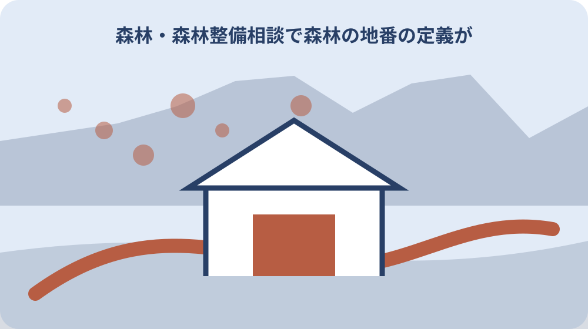
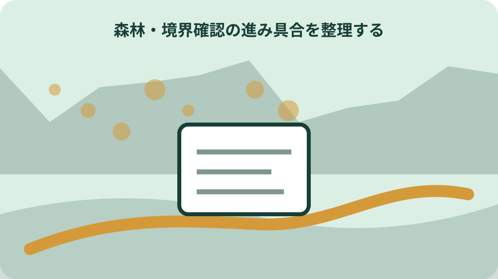

先に結論を確認する
この記事の答え：対象を特定できる地番、面積、所有関係の資料に加え、現況、境界、進入路、希望する作業を整理します。必要書類は相談先へ事前確認してください。
森町で最初に照合する条件：相談対象を特定できるよう、登記事項などで大字・小字・地番・面積・名義をそろえる。
森林整備相談の目的を一文にする
森林の相談は、間伐したい、植え直したい、境界を確かめたい、所有者変更の届出を知りたいなど目的で確認先が変わります。森町森林整備計画は森林所有者や林業経営体の整備指針であり、個別山林の工事見積書ではありません。最初に今回決めたいことを一文で明確にします。
2026年3月31日変更の計画書は、町、森林組合などの林業経営体、森林所有者が地域ぐるみで整備を進める考え方を示します。相談者だけで作業方法を確定するのではなく、所有関係、現況、希望を整理して担当者へ伝えるための起点として使います。
「山を何とかしたい」だけでは、現地調査、境界、間伐、造林、委託のどこから始めるか決まりません。地番、面積、名義が分かる範囲を添え、「荒廃状況を見て間伐の相談先を決めたい」のように目的と未確認事項を分けます。
相談票の先頭には「決めたいこと」「今回決めないこと」を書きます。たとえば現況調査の依頼先だけを決める段階なら、伐採契約や木材売却まで同日に結論を求めません。目的を狭めることで必要資料と担当窓口が明確になります。計画の確認、現況調査、見積り、契約を別の日程に置くと、前段階の未確認事項を抱えたまま発注することを避けられます。
地番と面積で対象山林を特定する
相談対象は大字・小字・地番・面積で特定します。通称の山名や集落名だけでは、担当者と所有者が同じ場所を見ているか確かめにくいためです。登記事項など手元の資料で確認し、複数筆なら一筆ずつ並べます。
面積は登記上の値と現地で手入れしたい範囲が同じとは限りません。全筆か一部か、隣接地を含むかを分け、位置図に概略を示します。分からない部分を推測で埋めず、「面積は登記資料の値、作業範囲は未確認」と書きます。
森町森林整備計画が町域の森林を扱っていても、特定筆が直ちに事業対象になるとは限りません。対象地を伝えたうえで、計画上の扱い、相談可能な作業、必要な現地確認を森町の林政係または案内された機関へ尋ねます。
地番が複数あるときは登記面積の合計だけを伝えず、筆ごとの一覧と位置図を対応させます。相談対象外の筆も背景として示すなら、その旨を明記します。担当者が現地図と資料を照合できる順番へ整えます。登記面積と地図上の見た目が違っても自分で修正せず、どの資料間で差があるかを示して確認先を尋ねます。
登記名義と相談者の関係を確認する
森林所有者本人が相談する場合と、相続人や家族が相談する場合では、確認が必要な権限や資料が異なります。登記名義人、相談者、実際の管理者を別々に書き、家族だから所有者だと決めつけません。
名義人が亡くなっている、共有者がいる、相続登記が済んでいない場合は、その状態を最初に伝えます。間伐の相談と名義整理を一つの回答で済ませず、森林整備の担当範囲と登記に関する確認先を分けます。
計画書は小規模林家が多いという森町の状況を示しています。小規模でも所有・管理の関係は省略できません。家族間で誰が相談し、誰が現地立会いし、誰が作業の同意を判断するかを決めてから窓口へ進みます。
共有名義なら一人の相談を全共有者の同意と扱いません。相談段階で必要な関係資料と、契約・作業開始前に必要な同意を分けて担当者へ確認します。家族内の口頭了解は日付と範囲を記録します。相続関係が未整理なら、森林整備相談で答えられる範囲と登記・権利確認を要する範囲を分け、専門窓口への照会順を決めます。

現況を樹種・林齢・荒廃で記録する
同じ面積の山林でも、樹種、林齢、密度、倒木、下草、獣害で必要な整備は変わります。分かる範囲で人工林か天然林か、主な樹種、植栽時期の手掛かり、放置期間を整理し、断定できない項目は未確認にします。
写真を用意するなら撮影日、撮影地点、向きを付けます。林道入口だけの写真で林内全体の荒廃を説明せず、倒木、傾斜、沢、隣接地との境付近など相談したい箇所を分けます。危険な斜面や私有地へ無断で入らないことが前提です。
森町は計画に沿って間伐や造林などを進めるとしていますが、個別地で必要な作業は現況確認なしに確定できません。写真と資料は診断の代わりではなく、現地確認の要否と相談先を具体化する材料として提出します。
古い森林簿や家族の記憶を使う場合は資料の時点を付けます。樹種や林齢が現況と一致するかを現地で再確認し、倒木など安全上の変化は別に伝えます。過去資料と現在写真を同じ時点の情報として混ぜません。沢沿い、尾根、道路沿いで状態が違うなら区域を分け、代表写真一枚で全筆の状態を説明しないようにします。
間伐と造林の希望を分ける
間伐は立木の一部を伐って残す森林の成長を助ける作業、造林は植栽や更新を含む森林を育てる作業です。計画書が両方を掲げていても、相談時には「混み合った林を間引きたい」と「伐採後に植えたい」を別の希望として伝えます。
作業希望には目的を添えます。倒木不安、日照、搬出、将来の管理など目的が異なれば、確認すべき範囲も変わります。費用や補助がある前提で作業を発注せず、対象条件、実施主体、所有者負担を担当窓口と事業者へ確認します。
計画書は集落単位で森林施業について話し合う方針も示しています。一筆だけの希望が周辺の施業地集約と関係する場合があるため、隣接地の状況を推測せず、地域での取組や森林組合への委託可能性を尋ねます。
間伐と主伐・再造林では伐る割合、搬出、植栽後の管理が異なります。相談前に専門用語で作業を決め打ちせず、残したい林の状態と管理できる期間を伝え、現地に合う作業名と順序を確認します。
境界確認の進み具合を整理する
計画書は施業地の集約化と合わせ、地籍調査などを活用して森林境界の明確化を進めるとしています。これは、手元の公図だけで現地境界が確定するという意味ではありません。資料上の線、現地目印、隣接所有者との確認を分けます。
境界が不明でも相談を始めることはできますが、作業範囲を確定できるとは限りません。分かっている境界点、未確認区間、過去の立会い記録、地籍調査成果の有無を示し、次に誰の確認が必要かを相談します。
杭やテープを見つけても所有界だと断定しません。写真には位置と撮影日を付け、隣接者の記憶だけを確定資料に置き換えないようにします。境界確認と間伐見積りを同日に進める場合も、どこまでが仮の範囲かを明示します。
地籍調査成果がある場合も、対象筆と成果の範囲を確かめます。公図、測量図、現地目印のどれを使ったかを一覧にし、食い違いは消さずに残します。作業者へは確定区間と未確認区間を色分けして渡します。
進入路と作業路の状況を残す
森林整備では対象地に到達できるか、機械や搬出車両が入れるかが作業方法に関わります。公道から山林までの経路、道幅、路面、ゲート、橋、急勾配、倒木を確認し、道路の所有・管理者が不明ならそのまま記します。
地図上に道があっても、現在通行できるとは限りません。現地確認日と通行できた範囲を写真に残し、他人の土地を通る可能性があれば利用権限を別に確認します。歩いて入れたことを車両進入可能という結論へ広げません。
作業路を新設または修繕する話は、間伐そのものとは費用も確認事項も異なります。森林整備課が担当する事業の範囲や、森林組合などが現地で判断する事項を聞き、道の整備費を含む見積りかどうかを確かめます。
公道から入口までと、山林内の作業路を分けて記録します。幅員だけでなく旋回場所、路肩、排水、橋の耐荷重が未確認ならその旨を示します。搬出車両の可否は現地を見た事業者の判断を得ます。
森林組合への施業委託を検討する
森町森林整備計画は、森林組合などの林業経営体への施業委託を進める方針を示します。委託を検討する際は、対象地、希望作業、境界、進入路の情報をそろえ、現地調査と見積りの範囲を確認します。
委託すれば所有者の確認が不要になるわけではありません。作業区域、伐る木、搬出材の扱い、費用、完了確認、隣接地への配慮を契約前に整理します。計画の方針は個別契約の条件や受託可否を保証しません。
複数の小規模林をまとめることで施業を進める考え方がある一方、周辺所有者の参加状況は地区ごとに異なります。自分の山だけで進める案、地域の集約を待つ案、現況確認だけ行う案を並べて相談します。
見積書では伐倒、集材、搬出、処分、植栽、道の整備のどこまで含むかを確認します。木材収入を差し引く場合は材積や価格の前提を聞き、計画書の一般方針を収支保証として扱いません。
森林経営管理制度の扱いを確認する
計画書は森林経営管理制度の活用を、森町の実情を踏まえて継続検討するとしています。この記述から、相談すれば必ず制度を利用できる、町が直ちに管理を引き受けるとは判断できません。
制度を尋ねるときは、所有者が自ら管理できない事情、対象地、現況、境界、既存の委託関係を伝えます。計画の一般方針と、自分の山林が対象になるかという個別回答を分け、回答日と担当部署を控えます。
制度利用だけを唯一の解決方法にせず、森林組合への相談、必要箇所だけの整備、現況調査を先に行う案も検討します。利用可否が未確定の段階で、整備時期や費用負担が決まったように家族へ伝えないことが重要です。
窓口回答には「制度の説明」「対象候補」「正式決定」を区別して記します。候補になり得るという説明を採択や委託成立へ読み替えません。追加調査や所有者意向確認が必要なら次の期限を決めます。

FSC森林認証との関係を尋ねる
中遠地区では森町と掛川市内の森林を広域管理する遠州森林認証グループが設立され、森町はFSC森林認証面積の拡大と持続的な森林経営を目指しています。認証の地域的な取組と、一筆の相談手続きは分けて理解します。
所有林が認証区域に含まれるか、整備方法に求められる条件があるかは、地番を示して担当者へ確認します。森町内にあることだけで認証林と断定せず、認証の対象、管理主体、必要な記録を確認します。
木材販売や補助を期待して認証の話を進める場合も、認証の有無だけで収益や採算は決まりません。施業費、搬出条件、材の扱いを事業者へ確認し、認証に関する公表事実と個別見積りを別々に家族へ示します。
遠州森林認証グループの広域管理という事実から、すべての森町所有林が自動加入すると推測しません。対象区域、参加手続き、所有者に求められる管理記録を確認し、認証外の整備相談と混同しないようにします。
森町と天竜農林局を使い分ける
町内の対象地や森町森林整備計画の表示については、まず森町の林政係へ確認します。県の静岡県西部農林事務所天竜農林局森林整備課は、造林・間伐などの森林整備を担当しています。問い合わせの論点を分けると、担当外の往復を減らせます。
天竜農林局森林整備課の電話番号は053-926-2327です。同課の林業振興班は森林環境保全直接支援、主伐・再造林、間伐材搬出などを担当します。ただし、名称だけで自分の相談が事業対象だと判断せず、対象地と目的を伝えます。
町へは計画上の扱いと町内窓口、県へは県事業や専門的な森林整備の担当範囲、森林組合などへは現地作業と見積りを尋ねる形が基本です。回答が別部署へまたがる場合は、同じ質問を繰り返さず前の回答と未確認点を伝えます。
電話前に地番、面積、名義、相談目的を一枚にします。県へ電話する場合も町から案内された経緯を伝え、053-926-2327の担当範囲外なら次の部署名を確認します。回答者個人名より部署と日時を残します。
大石の視点：山林を急いで処分せず確認順を決める
計画期間には公式表示の不一致があります。森町の案内HTMLは2029年3月31日まで、リンク先の2026年3月31日変更PDFは2024年4月1日から2034年3月31日までとしています。一方だけを確定日として案内せず、林政係へ確認します。
PDFは2026年3月31日付の変更で、変更内容は2026年4月1日に効力を生じるとしています。計画期間を引用する場合は資料名、変更日、該当ページを添え、町HTMLとの不一致を注記します。表示が直ったか公開直前にも再確認します。
相談後は、対象地、回答内容、追加資料、現地確認の担当、次に連絡する日を残します。私は小さな不動産業者として、売却や伐採を先に決めるより、境界、進入路、名義、現況を順に確かめる方が家族の選択肢を守れると考えます。これは私見であり、計画書の記載ではありません。
公的事実として確定できるのは両資料に異なる終了日があることです。どちらが正しいかという結論は町の回答前に書きません。私見としては、表示差を隠さず読者へ示し、実行日に有効な版を窓口で確かめるのが安全です。回答を得たら、確認した部署、日付、参照すべき資料名、表示修正予定の有無を残します。口頭回答だけで過去のPDFを上書きせず、家族へは公表資料の差と町の説明を並べます。整備を急ぐ場合も、計画期間の表示差と個別事業の受付期限は別問題なので、必要な申請日を改めて確認します。山林の処分を検討する場合は、境界、道路、管理委託の回答がそろう前に価格だけで判断せず、未確認事項が買主や家族へ説明できる状態かを見ます。